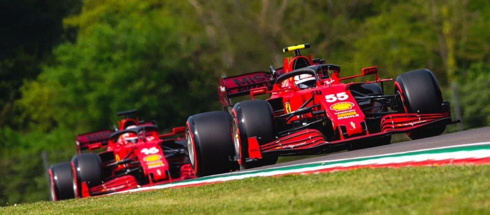

<html lang="en"></html>
<head>
    <meta charset="UTF-8">
    <meta name="viewport" content="width=device-width, initial-scale=1.0">
    <title>Formula 1</title>
</head>
<body>
    
</body>
</html>
<html lang ="en"></html>
<head>
    <link rel="stylesheet" href="style.css">
</head>
<body>

        <header>
            <div class="tabs">
                <li><a href="/history.html" class="standings">Events</a></li> 
                <li><a href="/latestNews.html" class="lastestNews">Latest</a></li>
                <li><a href="/videos.html" class="video">Videos</a></li> 
                <li><a href="/teams.html" class="teams">Teams</a></li> 
                <li><a href="/drivers.html" class="drivers">Drivers</a></li> 
                <li><a href="/circuits.html" class="circuits">Circuits</a></li> 
                <li><a href="/schedule.html" class="schedule">Schedule</a></li> 
                <li><a href="/result.html" class="results">Results</a></li> 
                <li><a href="/standings.html" class="standings">Standings</a></li> 
            </div>
            <button>Search</button>
            <section class="banner">
                
            </section>
        </header>

            <section class="takte">
              
              <div class="welcome">
                <h2>Formula 1 <br><span> 2024 </span></h2>
            </div>
            </section>

            <main>
                <article>
                    <h3>ABOUT</h3>
                    <p>Formula 1 (F1) is the premier class of single-seater auto racing sanctioned by the Fédération Internationale de l'Automobile (FIA). Renowned for its high speeds, technological advancements, and intense competition, F1 has captivated audiences worldwide for decades.

                        <br><br>The series features a grid of 20 cars, each driven by a professional racing driver. These cars are meticulously engineered to achieve maximum performance, pushing the boundaries of technology in areas such as aerodynamics, engine design, and materials science.
                        
                        <br><br>F1 races are held on a variety of circuits, ranging from high-speed straights to challenging corners and elevation changes. Each race is a thrilling spectacle, filled with strategic decisions, overtaking maneuvers, and the occasional dramatic incident.
                        
                        Beyond the racing itself, F1 is also a global cultural phenomenon, attracting millions of fans from around the world. The sport has produced iconic drivers, memorable moments, and a rich history that continues to inspire and entertain.</p>
                </article>
            </main>